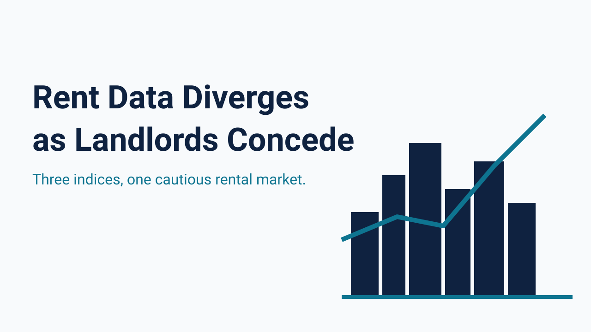
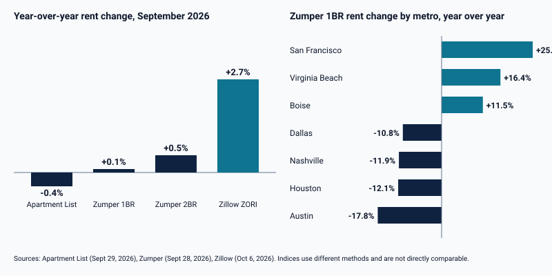

Annual Rent Growth Spans -0.4% to 2.7% Across Three Indices as Concessions Reach 39.6%

Rental income is the numerator in every DSCR calculation, so the direction of rents matters as much to a lender as the price of the property. The three most widely cited September 2026 rent indices do not agree on that direction. Zillow's Observed Rent Index put the typical U.S. rent at $1,932, up 2.7% from a year earlier and 0.1% from August, the largest annual gain since April 2025. Apartment List reported a national median of $1,388, down 0.4% year over year and down 0.1% for the month. Zumper's index showed one-bedroom rents at $1,518, up 0.1% for the year, and two-bedrooms at $1,903, up 0.5%.
The indices differ in method and coverage, so their levels and growth rates should not be compared directly, and the gap between them is itself a reason for caution. None of the three shows a sharp move in either direction; the range from -0.4% to 2.7% describes a flat-to-modest market, not a boom or a decline.

Concessions provide a clearer signal of landlord leverage. Zillow reported that 39.6% of rental listings offered a concession in September, up from 37.4% a year earlier and 39.3% in August. Apartment List's national vacancy index stood at 7.0%, below its February peak of 7.3%, while its median time on market rose two days from August to 34 days. A typical household earning the median income would spend 26.3% of income on the typical rent, according to Zillow, essentially unchanged from a year earlier at 26.4%.
Dispersion between metros is far larger than dispersion between indices. Zumper's one-bedroom index rose 25.4% year over year in San Francisco to $4,400, a new all-time high, and 16.4% in Virginia Beach and 11.5% in Boise. It fell 17.8% in Austin, 12.1% in Houston, 11.9% in Nashville, and 10.8% in Dallas, which Zumper attributed mainly to new supply still being absorbed in Texas and Nashville. An investor underwriting a property in Texas or Nashville against rents from two years ago is therefore working with an input that may already be materially overstated.
Rents are not falling in aggregate, and the strongest index shows the fastest annual growth in more than a year. They are also not rising uniformly, and a concession rate near 40% shows that headline rent is not always the rent a tenant pays. Investors and lenders should treat any single index with caution, check the local market against more than one source, and confirm the effective rent in the signed lease or rent roll. October releases will show whether the September concession rate was a peak.